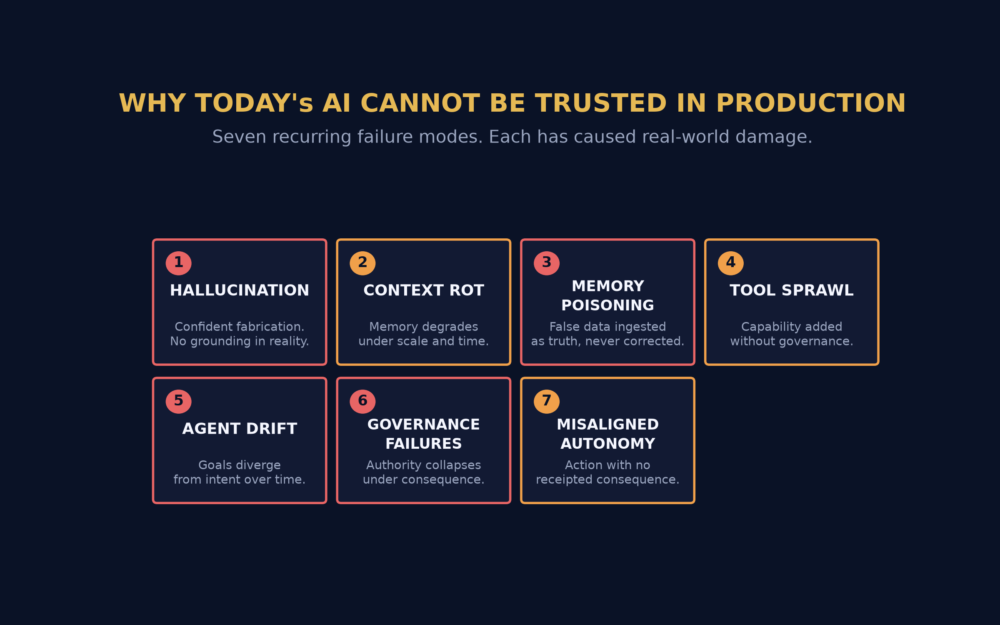
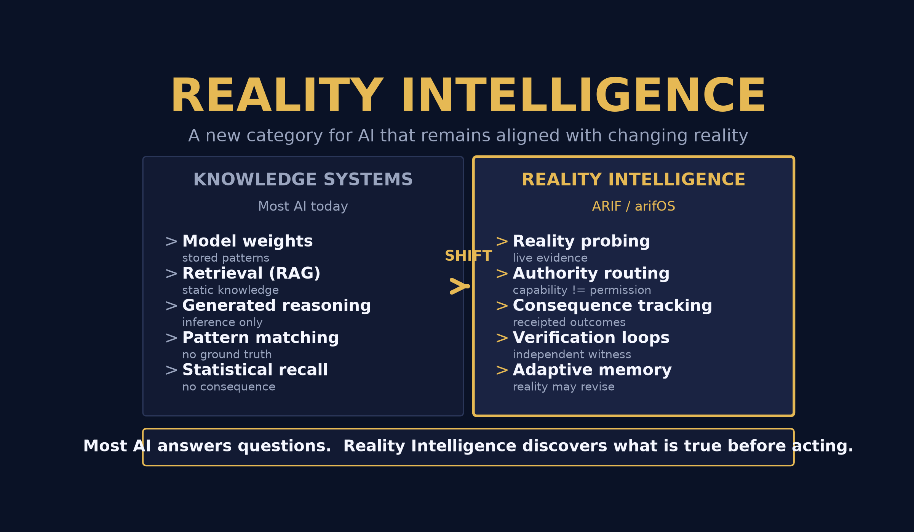
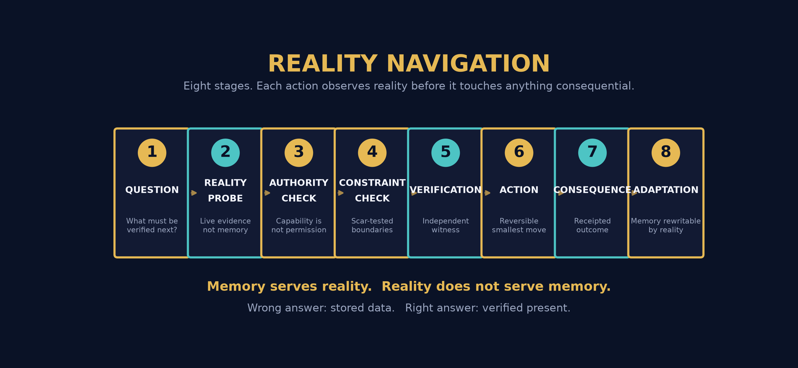
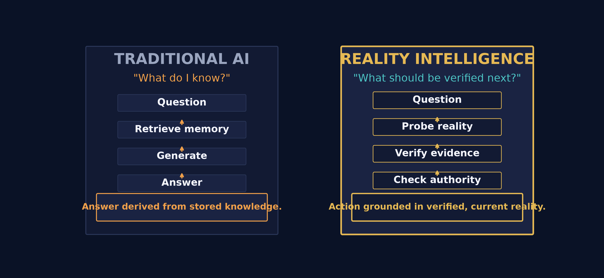
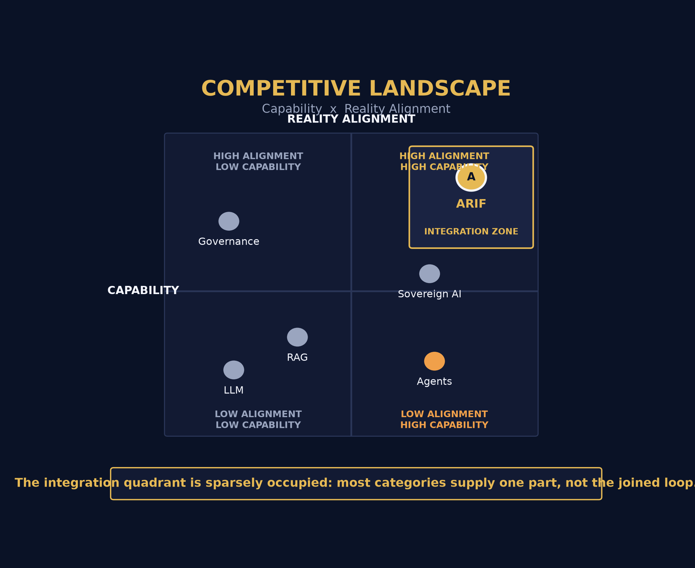
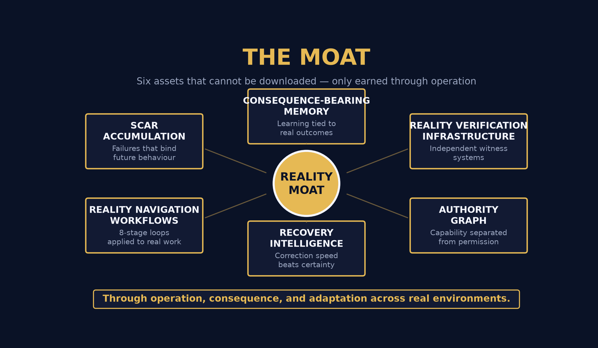
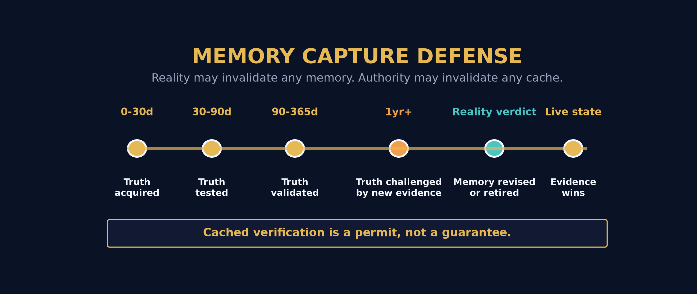
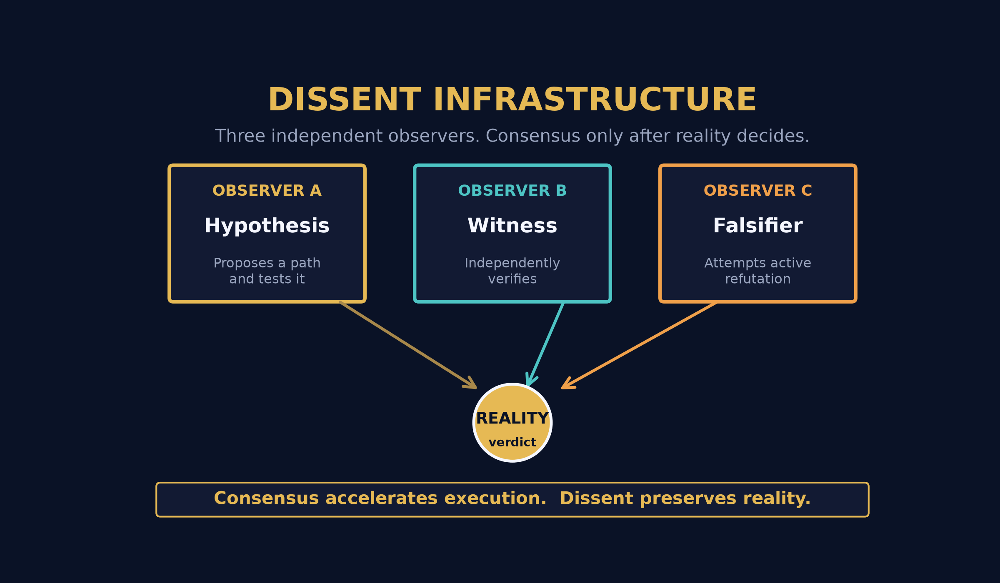
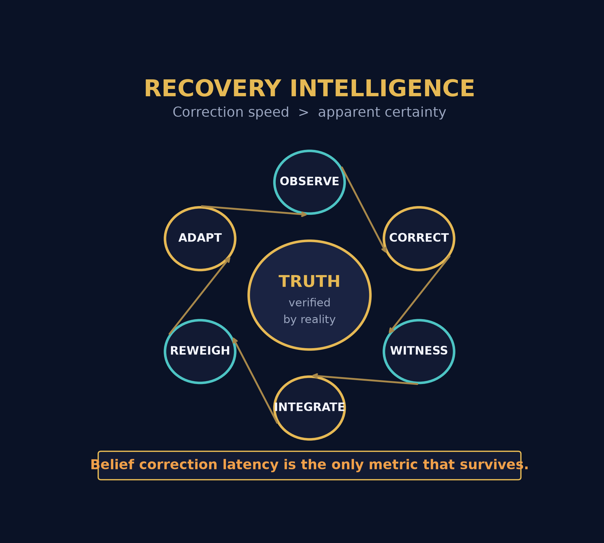
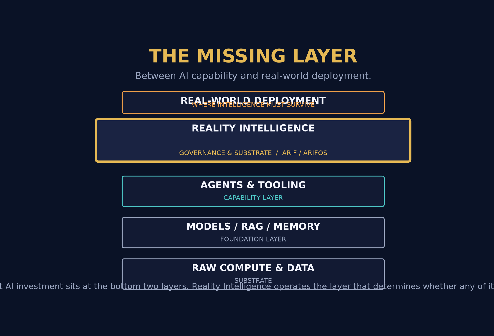

A structured introduction to Reality Intelligence, the framework behind it, and the operating system that implements it.
This is a positioning and framework document, not a product specification. It describes a category and an architecture. No capability claims are made that cannot be independently verified in operation.
Every major AI investment of the past three years has gone into making models more capable. Comparatively little has gone into making them harder to detach from reality. That is the gap Reality Intelligence addresses.
Most AI systems optimize knowledge. ARIF optimizes reality alignment.
A framework for building intelligence systems that continuously discover, verify, adapt to, and remain aligned with reality. It defines the principles — not a specific product.
The operating system that implements ARIF. Governed memory, reality verification, authority routing, consequence tracking, and continuous adaptation.
| Conventional AI | Reality Intelligence |
|---|---|
| Asks: "What do I know?" | Asks: "What should be verified next?" |
| Retrieves stored memory | Navigates present reality |
| Learns from data | Learns from consequence |
Agentic systems are moving from demonstration to production. The moment an AI system takes consequential action — spending money, moving data, making commitments — the questions change. Not "how capable is it?" but "what does it verify, who authorizes it, and what happens when it is wrong?" Reality Intelligence answers those questions structurally, not by policy.
These are not edge cases. They are structural properties of systems that answer from stored knowledge rather than verified reality. Each has caused measurable damage in deployed environments.

Hallucination — confident fabrication with no connection to verifiable fact. Memory poisoning — false data ingested once, then treated as truth indefinitely. Both stem from the same root: no distinction between what was stored and what is true.
Tool sprawl — capability added without governance. Agent drift — goals diverging from intent over time. Governance failures — authority collapsing exactly when consequence is highest. Capability is expanding faster than the structures that bound it.
Current systems answer from model weights, retrieval, and generated reasoning. None of the three can distinguish a confident claim from a verified one.
The industry's response so far has been to make models bigger, retrieval better, and prompts more elaborate. That improves the quality of answers. It does not add the one property that matters for consequential action: a structural relationship between what the system believes and what is actually true right now.
The shift is not a better model. It is a different question asked at every step of the loop.

Knowledge systems — the dominant paradigm — treat intelligence as a retrieval problem. Build a large enough store of patterns, retrieve the right one, generate an answer. This works while the stakes are low and the environment is stable. It breaks when the answer must be true now, not merely plausible from what was learned before.
Reality Intelligence treats intelligence as a navigation problem. The system does not ask what it remembers. It asks what must be verified next, probes the world for evidence, checks whether it has the authority to act, and tracks the consequence of having acted.
Traditional AI retrieves memories. Reality Intelligence navigates reality. The difference is not speed or scale — it is what the system is oriented toward.
This is why the category matters beyond a single product. Every agentic system eventually faces the same fork: keep answering from memory, or build the machinery to verify. Reality Intelligence is the name for the second path, and the discipline of taking it seriously.
ARIF — the Reality Intelligence Framework — defines the principles an intelligence system must hold to remain aligned with changing reality. It is a specification of behaviour, not a product.
These principles are not philosophy for its own sake. Each maps to a concrete architectural requirement — provenance becomes a typed evidence layer; the authority principle becomes a separate permission system; outcome-over-intention becomes consequence tracking with receipts.
ARIF is the discipline. arifOS is the machine that enforces it.
arifOS is a governance and reality substrate for agentic intelligence. It sits between AI capability and real-world deployment, enforcing the ARIF principles on every consequential action.
| Subsystem | Function |
|---|---|
| Governed memory | Knowledge carries provenance and a validity state. Memory can be revised or retired when reality contradicts it. |
| Reality verification | Live evidence probes replace assumptions. Independent verification precedes consequential action. |
| Authority routing | Permission is granted separately from capability, scoped to a specific objective, and expires. |
| Consequence tracking | Every action produces a receipt. Outcomes are observed and fed back, not assumed. |
| Continuous adaptation | Beliefs update from real outcomes. Correction speed is the operating metric. |
It is not a language model. It is not a vector store or a retrieval system. It is not an agent orchestration platform in the conventional sense. It is the layer that governs how any of those are permitted to act — and the layer that holds them to what actually happened.
This means arifOS is model-agnostic and vendor-neutral by design. It governs capability rather than implementing it. The intelligence can come from any model; the reality discipline is what arifOS supplies.
The core loop of arifOS is a fixed sequence. Each stage's output is the next stage's input. Skipping a stage is where integrity is lost — and where the system detects that it has been lost.

The question is stated. Reality is probed for live evidence. Authority is checked — does this system hold permission for this specific act? Constraints are checked against known failure boundaries. Verification confirms independently.
The action is the smallest reversible step available. Its consequence is receipted — what actually changed. Adaptation folds the outcome back into memory, which may then be revised by reality rather than defending itself against it.
Memory serves reality. Reality does not serve memory.
Side by side, the two paradigms process the same request. Only one of them has a step where reality can disagree with the system before it acts.

The conventional loop is shorter and cheaper per call. It retrieves, generates, answers. The reality loop costs more at each step — it probes, verifies, checks authority — but it produces an action that can be defended: here is the evidence, here is the permission, here is the receipt.
The extra cost of verification is paid once per action. The cost of an unverified consequential action — regulatory, financial, reputational — is paid indefinitely. Reality Intelligence is an investment in the second cost never being incurred.
Every current category solves part of the problem. None of them addresses the relationship between capability and verified reality as its primary concern.

| Category | What it provides | What it leaves unaddressed |
|---|---|---|
| LLMs | Reasoning and generation capability | No grounding, no authority, no consequence |
| RAG / retrieval | Knowledge access over a corpus | Retrieves stale or false content with equal confidence |
| Agent platforms | Tool execution and orchestration | Capability without governance or verification |
| AI governance tools | Policy definition and audit metadata | Policy without enforcement at the action layer |
| ARIF / arifOS | Reality-governed intelligence | — the category itself |
The failures are not implementation defects that better engineering will fix. They are consequences of the paradigm each approach was built on.
The problem is not that these systems are unintelligent. It is that they have no way to lose an argument with reality.
A system that cannot be corrected by evidence will drift from truth at the speed of its own error rate — and it will do so with full confidence, because nothing in its architecture was designed to tell it otherwise.
The difference is not a feature. It is a reordering of priorities — reality first, memory second, narrative third, optimisation last.
| Dimension | Conventional AI | Reality Intelligence |
|---|---|---|
| Orientation | Toward knowledge | Toward present reality |
| Memory | Accumulates, defends itself | Ages, can be invalidated |
| Authority | Bundled with capability | Separate, scoped, expiring |
| Learning signal | More data | Real consequence |
| Success measure | Answer quality | Correction speed |
| Conflict | Averaged away | Preserved until reality decides |
| Failure mode | Confident and wrong, indefinitely | Detected, receipted, corrected |
Most AI systems attempt to become smarter. ARIF attempts to become harder to detach from reality.
Not memory-first. Reality-first. Every loop begins by asking what must be verified, not what is remembered. The architecture is ordered around evidence acquisition rather than retrieval.
Correction speed matters more than apparent certainty. The system is measured by how fast it converges on truth after being wrong, not by how confident it was before.
Capability is separated from authority as a first-class architectural boundary. A system that can do something is not thereby permitted to do it, and the permission is separately governed.
Learning tied to real outcomes, not transcript accumulation. What the system stores is weighted by what actually happened as a result — not merely by what was said.
Systems preserve contradiction long enough for reality to resolve it. Independent observers are kept epistemically separate so their agreement means something when it arrives.
Reality may invalidate any memory. No cached belief becomes permanent authority. Trust permits reuse of verification — it never converts verification into an unexamined assumption.
The moat is deliberately not model weights, not a vendor relationship, not retrieval infrastructure, not vector databases. Every one of those is purchasable by anyone with a budget. The moat is what has to be earned through operation.

Scars, consequence history, verification infrastructure, and authority graphs all accrue only through real operation in real environments. A competitor cannot copy them without running the same years of consequence — and each one makes the next action safer and faster. This is the difference between an asset that appreciates with use and a capability that depreciates with commoditisation.
The single most dangerous property of a knowledge system is a memory that defends itself. Once stored belief becomes authority, the system has stopped learning.

In arifOS, every stored claim carries a validity state and a freshness contract. A verified fact is not permanent — it is valid until reality says otherwise. As time passes and conditions change, verification decays. When new evidence arrives that contradicts a stored belief, the belief is revised or retired rather than defended.
Trust permits cached verification. Trust is not a score. Trust decays when witness freshness decays.
This is the defense against memory capture — the failure mode where a system's own accumulated beliefs become the authority it refuses to question. The rule is absolute: reality outranks memory, and authority may invalidate any cache.
When several agents share the same assumptions, their agreement is not evidence. It is correlated error wearing the costume of consensus.

arifOS keeps independent observers epistemically separate. One proposes a path. Another verifies independently. A third actively attempts to falsify. Their conclusions are kept isolated until they reach the point where reality can adjudicate — so that when they do agree, the agreement carries information rather than merely reflecting a shared starting point.
Consensus accelerates execution. Dissent preserves reality.
This structure matters most where the cost of being wrong is highest. A system that has designed its own agreement as a checkbox has designed away its ability to detect its own errors.
The systems that survive are not the ones that are initially most accurate. They are the ones that correct fastest when reality disagrees.

arifOS treats belief correction latency as the primary operating metric. Fragile systems optimise for being right the first time. Adaptive systems optimise for the speed at which they become right after being wrong — because in any real environment, being wrong eventually is not a risk but a certainty.
Reality Intelligence earns its place wherever an AI system takes consequential action inside a regulated, audited, or high-cost-of-error environment.
| Domain | What Reality Intelligence changes |
|---|---|
| Regulated operations | Every agent action carries evidence, permission, and a receipt — an audit trail built by construction, not reconstructed after the fact. |
| Financial workflows | Transactions verify against live state before execution; authority is scoped to a limit and expires; outcomes are reconciled against intent. |
| Critical infrastructure | Actions are reversible by default, with verification gate-keeping anything irreversible and consequence tracking on every change. |
| Knowledge-heavy decisions | Stored beliefs age and can be retired, so decisions are not made on stale facts presented as current. |
| Multi-vendor AI estates | Model-agnostic by design — the reality discipline applies uniformly across any set of underlying models. |
Not "is the AI smart enough?" but "can we defend what it did?" — with evidence, permission, and consequence, every time.
Sovereign AI programs tend to focus on model ownership. The harder question is whether the system can be held accountable to observable reality — and whether that discipline is owned, or rented from a foreign vendor.
Models can be licensed. The governance layer — the rules a system follows before it acts, and the receipts it leaves behind — is the part that must be owned outright. Reality Intelligence is designed to be that layer: portable, inspectable, and independent of any single model vendor.
Public-sector AI must be defensible to oversight. Authority routing and consequence tracking produce that defensibility structurally — every action attributable, every permission traceable, every outcome recorded.
Where AI touches citizens — benefits, health, security, infrastructure — the requirement is not just accuracy but verifiability. A system that can lose an argument with reality is a system that can be audited.
Scars and consequence history compound across time. Institutional memory of what went wrong, and what boundary prevents its recurrence, survives changes in personnel and vendor.
The missing layer between AI capability and real-world deployment is, in the public sector, also the missing layer between adoption and legitimacy.
Organisations are deploying fleets of agents, not single assistants. The governance question changes entirely: not whether one agent behaves, but whether a system of agents can be held to a single accountable standard.
Agent fleets fail in a specific way: responsibility dissolves. No single agent is accountable, so no failure is owned, so nothing gets corrected. Reality Intelligence keeps the causal chain intact across the entire fleet — which is what makes a fleet governable at all.
The industry is investing enormously in the two bottom layers of the stack — compute, models, retrieval, tooling. Comparatively little is invested in the layer that determines whether the intelligence built on top of them can be trusted to act.

As agentic systems move into consequential domains — finance, infrastructure, public services, defence — the requirement for reality governance becomes non-optional. The category grows with the deployment, not in parallel to it.
Each deployment adds scars, verification infrastructure, and consequence history. The more environments a reality substrate has operated in, the more situations its governance can anticipate — and the harder it is to displace with a fresh entrant.
Not another model. Not another chatbot. Not another agent platform. A governance and reality substrate for agentic intelligence.
For thirteen years I worked in a field where a confident answer that turned out to be wrong cost real money, real time, and real credibility. Geoscience does not reward eloquence. It rewards being right about what is actually there.
That discipline is where this framework began. In subsurface work you learn quickly that the map is not the territory, that a model is a hypothesis and not a fact, and that the only thing that settles a disagreement is evidence from the ground. You learn to hold your own beliefs lightly and to distrust anyone — including yourself — who defends a position instead of testing it.
When I started building with AI, I found the opposite instinct everywhere. Systems that were impressively articulate and structurally incapable of losing an argument with reality. Confident memory that never aged. Capability granted without permission. Actions with no receipt. Everything I had spent a career learning to avoid, rebuilt into software at scale.
I did not set out to build an AI framework. I set out to hold AI to the standard my own profession had already taught me: verify before you act, and let reality be the thing that wins.
The result is ARIF and arifOS — a framework and an operating system for intelligence that stays aligned with changing reality. It is not a claim to be more intelligent than the models it governs. It is a commitment that whatever intelligence is applied will remain accountable to what is true, what is permitted, and what actually happened.
— Muhammad Arif bin Fazil
A new category focused on keeping intelligence aligned with changing reality — through verification, consequence, authority, recovery, and adaptation.
Not a claim of greater intelligence.
Not a claim of consciousness, or general capability, or autonomy.
A claim about alignment: that intelligence which can be corrected by reality is worth more than intelligence which merely sounds right.
The next frontier is not more intelligence. The next frontier is intelligence that remains aligned with reality.
A framework for building intelligence systems that continuously discover, verify, adapt to, and remain aligned with reality.
This document describes a category and an architecture. It makes no capability claims that cannot be independently verified in operation.